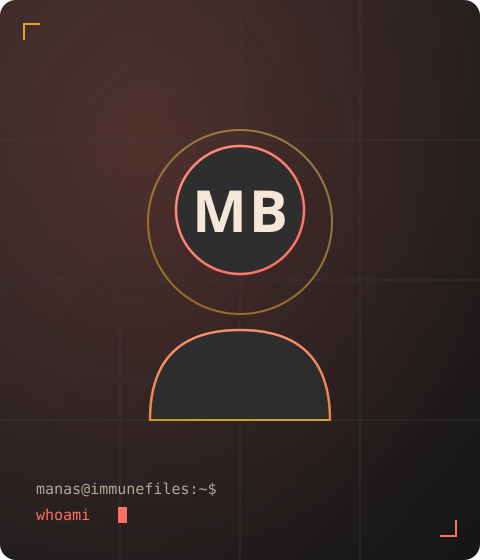
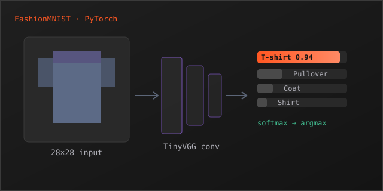
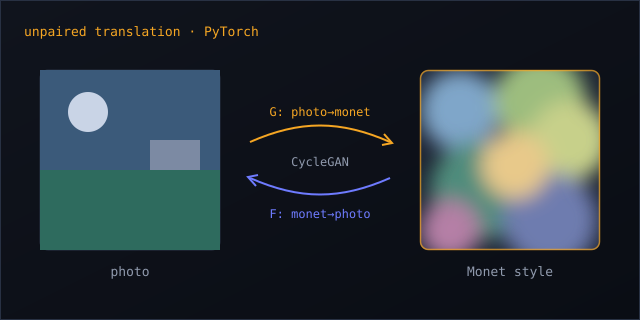

Building secure, AI-powered enterprise software.
CTO & Founding Engineer · Immunefiles · Noida, India

I take secure AI products from zero to production at enterprise scale.
At Immunefiles — a secure enterprise document collaboration and AI platform — I own the full technical stack as CTO and founding engineer, from architecture and infrastructure to the document-grounded LLM systems and the compliance posture that closes enterprise deals.
I took the product from nothing to live deployments at companies like Sharda Motors and Mitutoyo, shipping iteratively against real customer feedback rather than fixed specs. I care about systems that stay up, AI that behaves predictably in regulated environments, and infrastructure that's cheap to run and easy to trust.
Prudentbit — Immunefiles
Secure enterprise document collaboration and AI platform. In production at Sharda Motors, Mitutoyo, DC Technologies, Startup Movers and others, serving 500+ users.
- Owned end-to-end technical direction as CTO — architecture, stack, hiring, roadmap, and customer-facing technical conversations through enterprise sales and onboarding.
- Took the platform from zero to production at five enterprise customers, shipping against real feedback rather than fixed specs.
- Led the security and compliance posture needed to close enterprise buyers — SSO, RBAC, secrets management, audit logging, and SSL/TLS across all services.
- Built the document-grounded LLM layer using Retrieval-Augmented Generation, semantic search, and embedding pipelines over enterprise documents in production.
- Designed modular ingestion for PDF, DOCX, PPTX, CSV, and XLSX with automated parsing, semantic chunking, and indexing — onboarding customer corpora in hours.
- Architected multi-agent workflows with persistent context, stateful execution, and controlled prompt routing for complex document tasks.
- Implemented prompt governance and safety controls to reduce hallucinations and enforce policy-bound responses for regulated environments.
- Shipped multilingual, privacy-aware NLP to detect and mask regulated identifiers (PII, financial, healthcare) across structured and unstructured data.
- Deployed AI as scalable FastAPI microservices with GPU-accelerated inference (CUDA), tracing, and exception handling.
- Architected and deployed 15+ containerized microservices with Docker, Kubernetes, Helm, and Nginx at 99.9%+ availability.
- Built GitHub Actions CI/CD automating build, test, publish, rollout, and rollback — cutting deploy time by 80%.
- Provisioned cloud infrastructure with Terraform for repeatable dev and production deployments.
- Implemented traffic management and security with Azure Application Gateway, Cloudflare, WAF, and centralized SSL termination.
- Secured secrets via Azure Key Vault with RBAC, eliminating plaintext credentials in production.
- Built observability with Prometheus, Grafana, centralized logging, and Sentry — reducing MTTR by 60%.
- Optimized architecture to cut infrastructure costs by 40% while holding 99.9%+ availability.
- Operated RabbitMQ clusters and Microsoft Office / Collabora WOPI servers for secure, event-driven document collaboration.

TinyVGG Image Classification
Built a CNN using the TinyVGG architecture on FashionMNIST in PyTorch. Implemented custom training and evaluation loops, accuracy tracking, and model checkpoint saving — demonstrating a strong grasp of end-to-end deep learning workflows.

Monet Style Transfer with CycleGAN
Developed an unpaired image translation system using CycleGAN on the Kaggle Photo/Monet dataset (~8K photos, ~1.2K paintings). Used ResNet-based generators and PatchGAN discriminators, trained 30+ epochs with checkpoint/resume and multi-worker dataloaders, then curated a gallery of Monet-style outputs showing successful domain adaptation.
Languages
Frameworks & Libraries
AI / ML
Cloud & DevOps
B.Tech, Computer Science
- Google Cloud Certification
- Machine Learning A–Z: Python & R in Data Science
CUDA — Day 1
Kicking off the CUDA series: the GPU execution model, kernels, the grid/block/thread hierarchy, and writing and launching a first CUDA kernel.
The Streaming Multiprocessor (SM)
A look inside the SM — CUDA cores, warp scheduling, and how the hardware actually maps thread blocks onto execution units to run kernels in parallel.